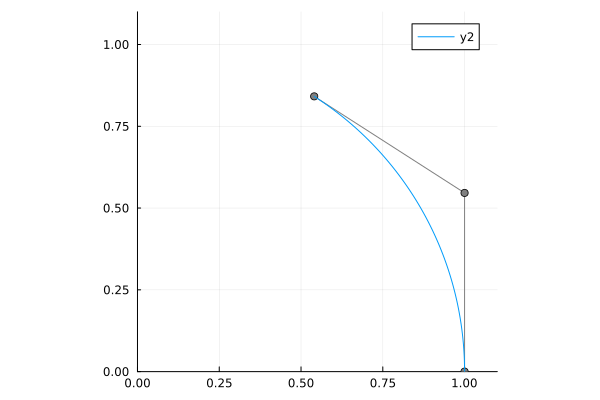
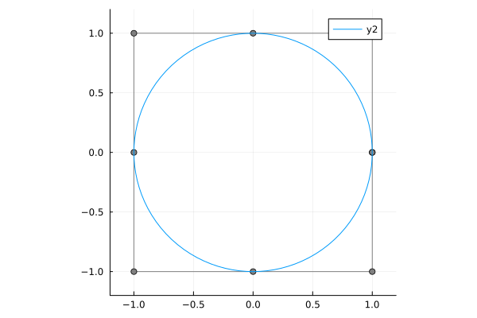

Geometric modeling
Setup
using BasicBSpline
using StaticArrays
using Plots
using LinearAlgebra
gr()Plots.GRBackend()Arc
p = 2
k = KnotVector([0,0,0,1,1,1])
P = BSplineSpace{p}(k)
t = 1 # angle in radians
a = [SVector(1,0), SVector(1,tan(t/2)), SVector(cos(t),sin(t))]
w = [1,cos(t/2),1]
M = RationalBSplineManifold(a,w,P)
plot(M, xlims=(0,1.1), ylims=(0,1.1), aspectratio=1)GKS: cannot open display - headless operation mode active
Circle
p = 2
k = KnotVector([0,0,0,1,1,2,2,3,3,4,4,4])
P = BSplineSpace{p}(k)
a = [normalize(SVector(cosd(t), sind(t)), Inf) for t in 0:45:360]
w = [ifelse(isodd(i), √2, 1) for i in 1:9]
M = RationalBSplineManifold(a,w,P)
plot(M, xlims=(-1.2,1.2), ylims=(-1.2,1.2), aspectratio=1)
Torus
plotly()
R1 = 3
R2 = 1
A = push.(a, 0)
a1 = (R1+R2)*A
a5 = (R1-R2)*A
a2 = [p+R2*SVector(0,0,1) for p in a1]
a3 = [p+R2*SVector(0,0,1) for p in R1*A]
a4 = [p+R2*SVector(0,0,1) for p in a5]
a6 = [p-R2*SVector(0,0,1) for p in a5]
a7 = [p-R2*SVector(0,0,1) for p in R1*A]
a8 = [p-R2*SVector(0,0,1) for p in a1]
a = hcat(a1,a2,a3,a4,a5,a6,a7,a8,a1)
M = RationalBSplineManifold(a,w*w',P,P)
plot(M)Paraboloid
plotly()
p = 2
k = KnotVector([-1,-1,-1,1,1,1])
P = BSplineSpace{p}(k)
a = [SVector(i,j,2i^2+2j^2-2) for i in -1:1, j in -1:1]
M = BSplineManifold(a,P,P)
plot(M)Hyperbolic paraboloid
plotly()
a = [SVector(i,j,2i^2-2j^2) for i in -1:1, j in -1:1]
M = BSplineManifold(a,P,P)
plot(M)